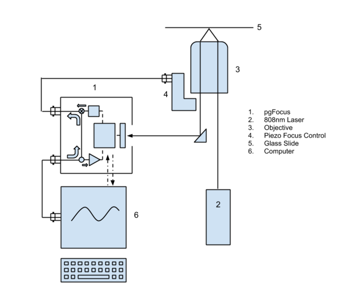

Pretty Good Focus

There is nothing worse than arriving in the morning to find that your overnight data acquisition drifted out of focus two hours in. However, commercial focus stabilization set ups only come on expensive and relatively recent microscopes. The coy-ly named Pretty Good Focus (pgFocus), is an open source hardware/software device for focus stabilization designed by Karl Bellvé at UMass Medical School. All the designs are posted and there is a detailed list of the optical components you need. Also there is a great description by Kyle Douglass on setting up the optics, hardware and software. You can control it through terminal commands, a pgFocus application or a micro-manager plugin. There seems to be good online support for people trying to implement this themselves. This system only works with high NA objectives and obviously requires some leg work, but it seems like a pretty good way of preventing drift.